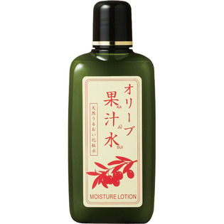

返回列表
产品名称：オリーブマノン グリーンローション（果汁水）

日本オリーブ オリーブマノン グリーンローション（果汁水） １８０ＭＬ
メーカー 日本オリーブ
JANコード 4965363003982
商品の特徴
オリーブ果汁水
天然うるおい化粧水
- 成分・分量
- ＜成分＞
水、エタノール、グリセリン、オリーブ油、オリーブ果汁、スクワラン、褐藻エキス、ローマカミツレ花油、トコフェロール、アルギニン、ピリドキシンHCI、リンゴ酸ジイソステアリル、オレイン酸デシル、セスキオレイン酸ソルビタン、ゲラニオール
- 用法及び用量
- ＜使用方法＞
洗顔後、容器をよく振ってから、2～4mLを手にとり、やさしくお肌にパッティングします。